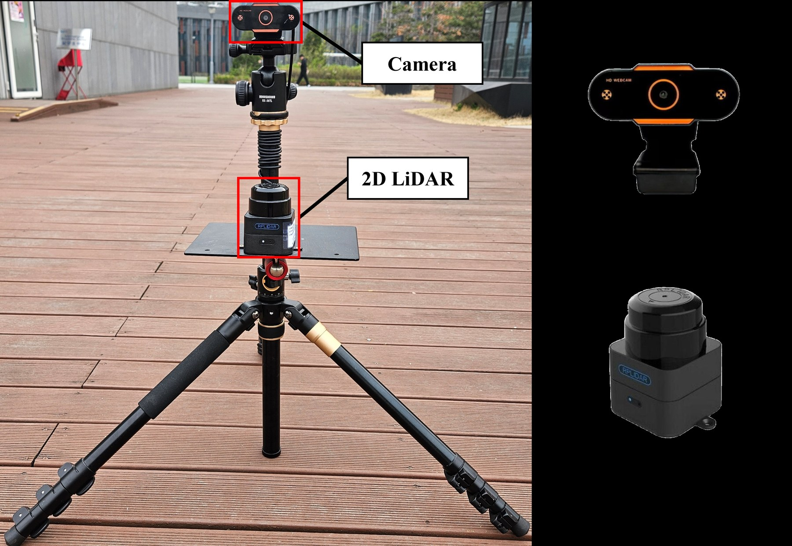
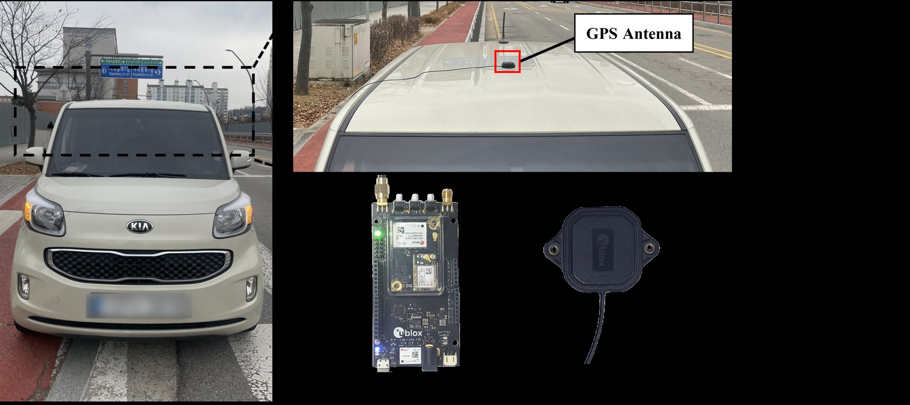
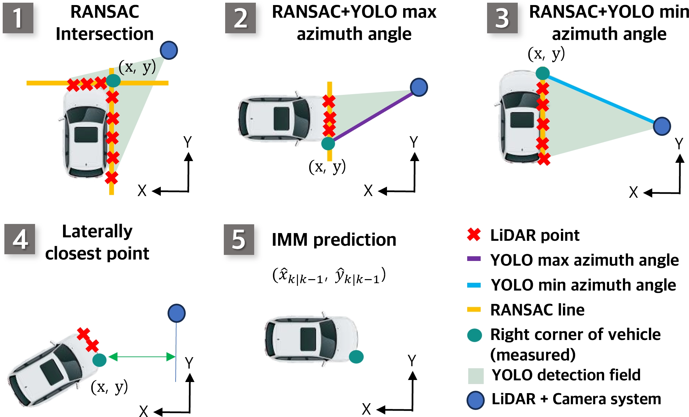
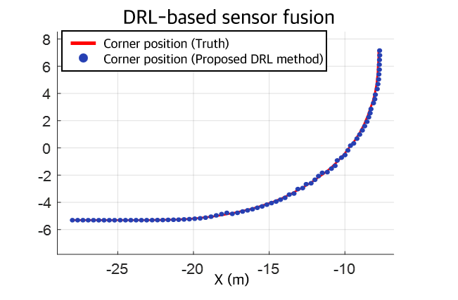
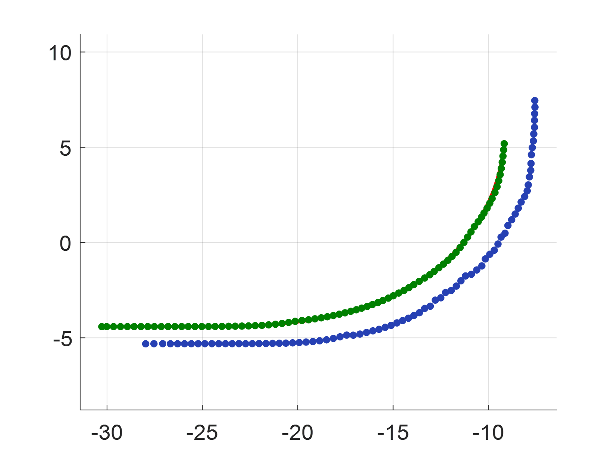
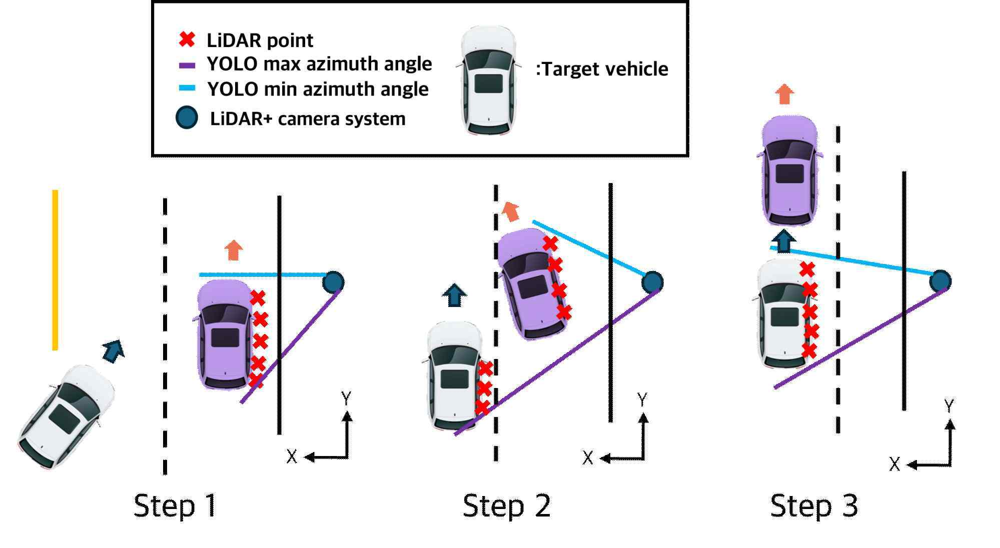
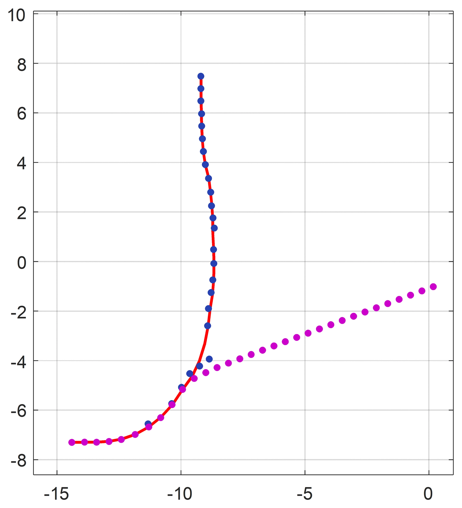

표적 차량의 일부가 가려지며 다른 차량의 점군을 선택하는 현상
한국연구재단 석사과정생 연구장려금
강화학습 기반 카메라-LiDAR 센서융합 객체추적
교차로의 고정형 카메라와 2D LiDAR로 차량을 추적한 연구. 센서 상태가 매 순간 달라지는 점에 맞춰 DQN이 다섯 위치 후보 중 하나를 선택하고, IMM이 관측이 끊기는 구간까지 차량의 위치·속도·진행방향을 이어서 추정.
- 연구 범위
- 기획, 알고리즘, 시뮬레이션, 현장시험
- 핵심 기술
- YOLO · DBSCAN · RANSAC · DQN · IMM
- 검증
- MATLAB 시뮬레이션, 서울 마곡동 현장시험
- 성과
- 석사학위논문, ICROS 발표, 특허
01 / QUESTION
연구 문제
고정 규칙 기반 융합은 가림, 급가감속, LiDAR 이상치처럼 관측 품질이 바뀌는 구간에서 잘못된 후보를 계속 선택했다. 핵심은 센서를 하나로 합치는 일이 아니라, 매 시점 어떤 관측을 믿을지 결정하는 문제였다.
동일 시점으로 보이는 두 센서 사이의 입력 시차 발생
RANSAC 교점이나 최근접점 하나를 고정 사용했을 때 오류 지속
단안 카메라와 2D LiDAR만으로 현장 상태추정 성능 확보
02 / SYSTEM
판단 구조



03 / OBSERVATION
다섯 관측 후보
프레임마다 센서 상태가 달라지므로 하나의 기하식에 고정하지 않고 후보 다섯 개를 동시에 계산했다. 기준점은 차량 전방 우측 모서리. 가림과 자세 변화에도 종·횡방향 위치를 같은 점으로 비교할 수 있고, LiDAR 선분과 카메라 바운딩박스 경계가 함께 만나는 지점이기 때문이다.

- RANSAC 교점차량 두 면이 모두 보일 때 선분 교차점을 모서리로 사용
- YOLO 최대 방위각 × RANSAC영상 우측 경계가 선명한 프레임의 카메라–LiDAR 교점
- YOLO 최소 방위각 × RANSAC영상 좌측 경계가 선명한 프레임의 카메라–LiDAR 교점
- 횡방향 최근접점선회 중에도 유지되는 가장 가까운 LiDAR 물리 기준점
- IMM 예측점가림이나 이상치 발생 시 센서 대신 운동모델 예측 사용
04 / SIMULATION
시뮬레이션 결과


코너 관측 → 차량 중심 상태z = [xc + r cos(α−θ), yc + r sin(α−θ)]ᵀ
r = √((Lw/2)² + (Ll/2)²). 차량 크기와 진행방향 θ를 반영한 비선형 관측모델로 코너 측정값과 중심 상태를 연결.
| 시뮬레이션 시나리오 | 위치 RMSE | 속도 RMSE | 진행방향 RMSE |
|---|---|---|---|
| 단일차량 좌회전 | 0.066 m | 0.491 m/s | 0.038° |
| 단일차량 직진 | 0.012 m | 0.419 m/s | 0.001° |
| 다중차량 좌회전 | 0.054 m | 0.468 m/s | 0.041° |
| 다중차량 직진 | 0.015 m | 0.444 m/s | 0.002° |
센서 사양과 차량 기하를 반영한 MATLAB 환경에서 DQN 정책 학습과 IMM 상태추정 성능 검증.
05 / FIELD TEST
현장검증


| 현장 시나리오 | 위치 RMSE | 속도 RMSE | 진행방향 RMSE |
|---|---|---|---|
| 단일차량 좌회전 | 0.092 m | 0.224 m/s | 3.507° |
| 단일차량 직진 | 0.078 m | 0.401 m/s | 2.554° |
| 다중차량 좌회전 | 0.147 m | 0.397 m/s | 3.074° |
06 / OCCLUSION
가림 대응
앞 차량이 표적을 완전히 가리며 카메라·LiDAR 후보가 다른 차량 쪽으로 이동
DQN이 센서 후보 대신 IMM 예측점을 선택해 기존 표적 궤적 유지
표적이 다시 보이면 실제 센서 후보로 복귀해 장기 예측 오차 누적 억제


07 / RESULT
비교 결과
20.6%
현장 위치 RMSE 감소
동일 현장 데이터에서 Mahalanobis 거리 기반 비교 방법 0.126 m, 제안 방법 평균 0.100 m
| 검증 환경 | 비교 방법 | 제안 방법 평균 | 감소율 |
|---|---|---|---|
| MATLAB 시뮬레이션 | 0.043 m | 0.030 m | 30.2% |
| 서울 마곡동 현장시험 | 0.126 m | 0.100 m | 20.6% |
비교 방법 수치는 학위논문 표의 직접 기재값이 아니라 동일 데이터로 별도 계산한 평균. 시뮬레이션에서 학습한 DQN 정책은 현장 데이터에 추가 학습 없이 적용했으며, 도메인별로 IMM 잡음 공분산만 조정.
08 / OWNERSHIP
수행 범위
- 기획연구 질문 설정, 선행연구 분석, 과제계획 수립
- 알고리즘다섯 관측 후보 정의, DQN 상태·행동·보상 설계, IMM 결합
- 환경MATLAB 시뮬레이션 구축, 센서 플랫폼 설치, 실험차량 운전
- 검증RTK-GPS 기준 데이터 수집, 시뮬레이션과 현장 로그 분석
- 성과화석사학위논문 작성, ICROS 제1저자 구두발표, 특허 공동발명
09 / OUTPUT
논문·특허
석사학위논문교차로 도로변 센서 시스템을 위한 강화학습 기반의 단안 카메라와 2D LiDAR 센서 융합 알고리즘98쪽 원문ICROS 2025차량 추적을 위한 강화학습 기반 도로변 센서 시스템제1저자, 구두발표
특허차량 상태 추정 방법, 이를 수행하는 장치 및 기록매체10-2025-0136289
연구과제 참여 증명서는 과제명, 기간, 역할 확인에만 사용. 생년월일과 문서번호가 포함된 취업용 원문은 공개하지 않음.